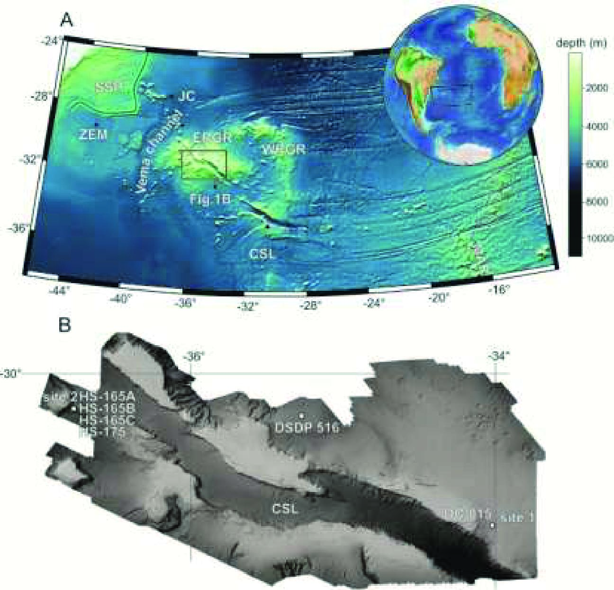

Dating Gondwanan continental crust at the Rio Grande Rise, South Atlantic

Resumo em Português
Rochas continentais cristalinas e rochas basálticas associadas, contaminadas por crosta, foram inesperadamente dragadas na crista e em montes submarinos da Elevação do Rio Grande, no Atlântico Sul. As idades U-Pb em zircão de um gabro (ca. 2.200 Ma) e quatro granitoides (entre ca. 1.430 e 480 Ma) indicam que a fragmentação do sudoeste de Gondwana deixou para trás fragmentos continentais de idade predominantemente africana. Essas rochas podem ter sido incorporadas à litosfera oceânica por processos complexos, incluindo rifteamento e interação da pluma mantélica de Tristão-Gough com margens continentais hiperextendidas. Até ca. 80-70 Ma, a Elevação do Rio Grande e uma porção antiga da Dorsal de Walvis formavam um par conjugado de dorsais assimísmicas, e a pluma de Tristão-Gough estava posicionada na Dorsal Mesoatlântica. A descoberta de fragmentos de rochas continentais em um desses pares conjugados abre novas perspectivas sobre os mecanismos de ruptura continental, a natureza desse par conjugado e a evolução geodinâmica das margens rifteadas de Gondwana no Atlântico Sul.